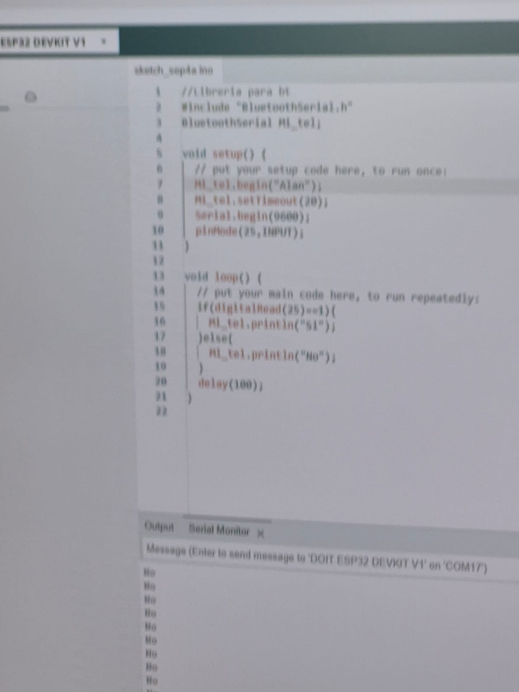
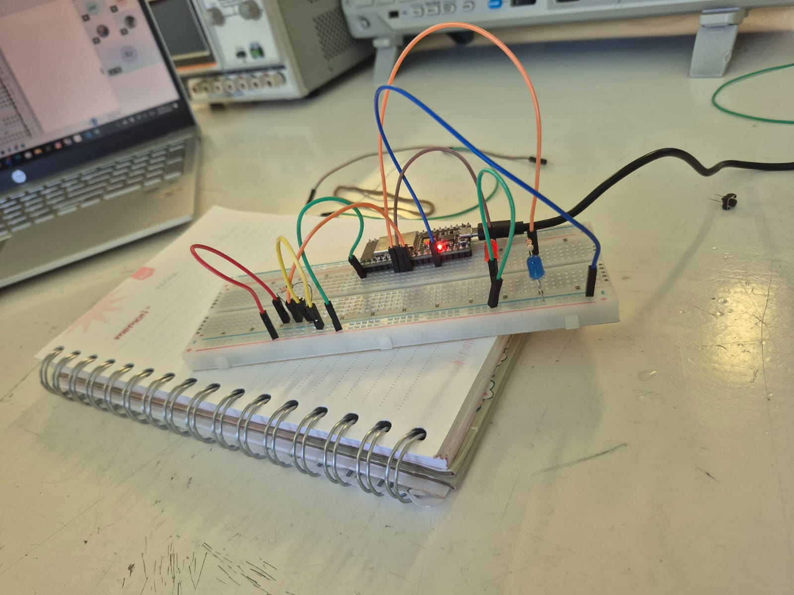
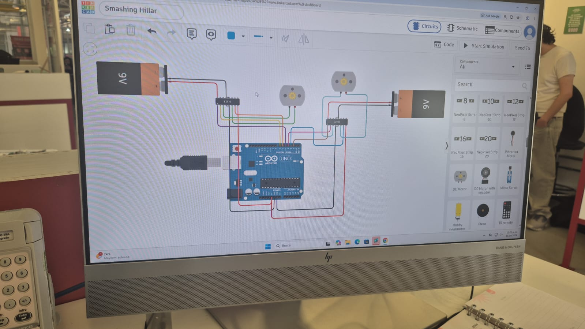
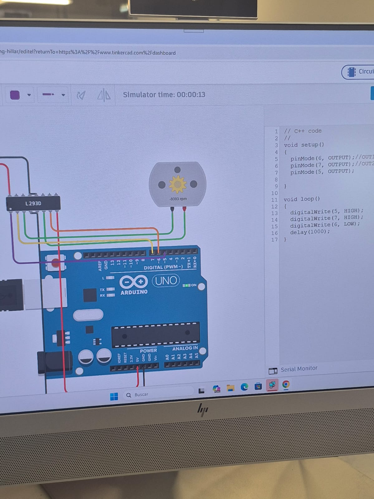

Reporte de prácticas - Introducción a la Mecatrónica
Introducción
Durante las clases de Introducción a la Mecatrónica realizamos diferentes prácticas para conocer las bases de la electrónica, la programación y el control de componentes.
A lo largo de las clases trabajamos con diferentes herramientas, como Arduino IDE, ESP32, Arduino UNO, protoboard y Tinkercad. Primero aprendimos algunos conceptos básicos y después comenzamos a realizar programas y circuitos para controlar componentes electrónicos.
Práctica 1 - Introducción a la electrónica
En la primera práctica comenzamos a conocer algunos de los conceptos y herramientas que se utilizan en mecatrónica.
Durante la actividad realizamos pruebas con equipo electrónico para observar el comportamiento de diferentes señales. Esto nos permitió tener un primer acercamiento al uso de los instrumentos que se encuentran dentro del laboratorio.
También aprendimos la importancia de realizar correctamente las conexiones y de revisar el circuito antes de comenzar una prueba.
Evidencia de la práctica
Práctica 2 - Bases de programación con Arduino
En la segunda práctica comenzamos a aprender las bases de programación para microcontroladores.
Utilizamos Arduino IDE para conocer la estructura básica de un programa. Aprendimos que setup() se utiliza para realizar las configuraciones iniciales y que loop() contiene las instrucciones que se ejecutan continuamente.
También aprendimos para qué sirven algunas instrucciones básicas, como pinMode(), digitalWrite(), digitalRead(), delay() y Serial.println().
Uno de los primeros ejercicios consistió en utilizar el monitor serial para enviar mensajes desde el microcontrolador hacia la computadora.
Evidencia del primer programa

Después comenzamos a trabajar con las salidas digitales. Aprendimos que los pines pueden cambiar entre los estados HIGH y LOW, lo que permite controlar componentes electrónicos.
Evidencia de programación de salidas

Con estos ejercicios comprendimos mejor la estructura de un programa y la forma en que las instrucciones escritas pueden controlar los pines de un microcontrolador.
Práctica 3 - Entradas digitales con ESP32
Después de trabajar con las salidas, comenzamos a utilizar las entradas digitales.
Para esta práctica utilizamos una ESP32, una protoboard, cables jumper, un botón y otros componentes electrónicos.
El objetivo fue aprender a detectar mediante programación si un botón estaba siendo presionado.
Para esto utilizamos una entrada digital y observamos el resultado mediante el monitor serial. Cuando el botón cambiaba de estado, el microcontrolador podía detectar este cambio y mostrar la información en la computadora.
Evidencia del código
Evidencia del circuito

Esta práctica nos permitió comprender mejor la diferencia entre una entrada y una salida.
Una entrada permite que el microcontrolador reciba información de un elemento externo, como un botón o un sensor. Una salida permite controlar otros componentes, como un LED o un motor.
Práctica 4 - Control de un motor en Tinkercad
En otra de las prácticas utilizamos Tinkercad Circuits para simular un circuito antes de realizarlo físicamente.
El objetivo principal fue aprender a conectar y controlar un motor de corriente directa (DC) utilizando un Arduino UNO.
Para realizar el circuito utilizamos principalmente:
- Arduino UNO
- Motor DC
- Puente H L293D
- Batería de 9 V
- Cables de conexión
- Tinkercad Circuits
El L293D es un circuito integrado que funciona como controlador de motores. Permite que el Arduino controle el motor utilizando señales digitales.
Durante la práctica realizamos las conexiones entre el Arduino, el L293D y el motor. Después programamos los pines necesarios y ejecutamos la simulación para comprobar el funcionamiento.
Evidencia del circuito

Evidencia del código utilizado

Posteriormente realizamos un circuito más completo en Tinkercad, utilizando motores, controladores L293D y fuentes de alimentación.

Esta simulación nos permitió entender mejor cómo se puede utilizar un microcontrolador para controlar el movimiento de un motor.
También aprendimos que Tinkercad es útil para probar un circuito de manera virtual antes de realizar las conexiones físicamente.
Práctica 5 - Circuito físico con ESP32
Después de realizar diferentes ejercicios de programación, trabajamos con los componentes de manera física.
Utilizamos una ESP32 colocada sobre una protoboard, cables jumper y diferentes componentes electrónicos.
Realizamos las conexiones necesarias y cargamos nuestros programas en la ESP32 para comprobar que lo realizado anteriormente mediante programación también funcionara en un circuito real.
Evidencia

Durante esta actividad aprendimos que tanto el programa como las conexiones físicas son importantes. Un error en cualquiera de los dos puede provocar que el circuito no funcione correctamente.
Conclusión
Durante estas prácticas aprendimos poco a poco las bases necesarias para comenzar a trabajar con sistemas mecatrónicos.
Primero conocimos algunos conceptos y herramientas de electrónica. Después aprendimos las bases de programación y la forma de utilizar entradas y salidas digitales con un microcontrolador.
También trabajamos con una ESP32 y utilizamos el monitor serial para observar información enviada por la placa.
Finalmente utilizamos Tinkercad para realizar simulaciones con Arduino UNO, motores DC y el controlador L293D. Esto nos permitió relacionar la programación con la electrónica y observar cómo un programa puede controlar componentes físicos.
En general, estas prácticas nos ayudaron a comprender mejor cómo se relacionan la programación, la electrónica y el control de dispositivos dentro de la mecatrónica.